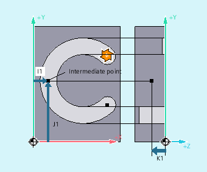
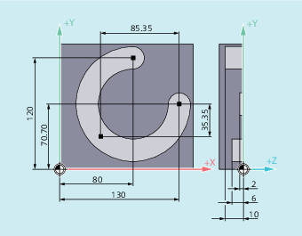

The circular interpolation version programmed with the G command CIP allows the interpolation of arcs lying at an incline in the space.
The circular motion is described by the intermediate point and the end point of the circular contour.
The traversing direction is determined by the order of the starting point → intermediate point → end point.

| Circular interpolation through intermediate point | |
Effective: | Modal | |
| Circle end point in Cartesian coordinates. Depending on the currently valid dimensional notation setting | |
| Interpolation parameters to state the circle intermediate point coordinates in the directions X, Y, Z Depending on the currently valid dimensional notation setting Note | |
| Note |
The default settings With incremental dimensions |
| Note |
Turning technologyThe diameter programming of the interpolation parameter for the transverse axis is not supported with |
In order to machine an inclined circular groove, a circle is described by specifying the intermediate point with three interpolation parameters, and the end point with three coordinates.
| Program code | Comment |
|---|---|
| N10 G0 G90 X130 Y70.70 S800 M3 | ; Approach starting point. |
| N20 G17 G1 Z-2 F100 | ; Feed of the tool. |
| N30 CIP X80 Y120 Z-10 I1=IC(-85.35) J1=IC(-35.35) K1=-6 | ; Circle end point and intermediate point. |
| ; Coordinates for all three geometry axes. | |
| N40 M30 | ; End of program |
| Program code | Comment |
|---|---|
| ... | |
| N125 G1 G90 X40 Z-25 F0.2 | |
| N130 CIP X70 Z-75 I1=IC(26.665) K1=IC(-29.25) | ; Interpolation parameter I1 for transverse axis must be programmed in the radius. |
| ; or | |
| ; N130 CIP X70 Z-75 I1=46.665 K1=-54.25 | |
| N135 G1 Z-95 | |